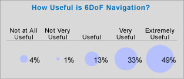
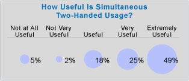
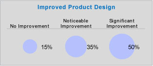
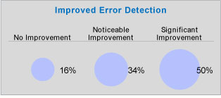
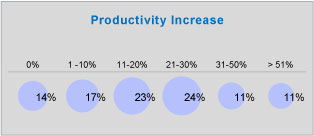
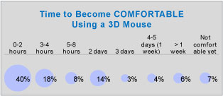
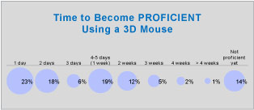
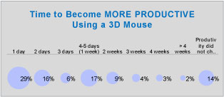
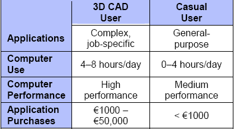

|
CAD Yazýlýmlarý ve 3D Mouse'lar
Daha önce de bahsedildiði gibi, ortak ve akademik araþtýrmalar gösterdi ki, yoðun olarak 3D uygulamalarý kullanan kiþilerin performansýnýn artmasýnda, 3D mouse'larýn 2 önemli özelliði rol oynuyor:
- 3D objeleri ya da görüntüleri hýzlýca yönlendirmek için, 6DoF (6 serbestlik dereceli) aletleri
- Her iki elin de ayný kullanýlmasýna izin veren aletler (Örneðin, bir elde 3D mouse, diðerinde ise klasik 2D mouse)
Bu araþtýrma, 3D mouse kullanýcýlarýnýn iþlerinde bu her iki özelliði de tecrübe edip etmedikleri ve bunun onlara daha yüksek kalitede dizayn, daha iyi hata tespiti ve daha hýzlý çizimler yapabilme özelliði kazandýrýp kazandýrmadýðýný belirlemek için yapýlmýþtýr.
Bu kullanýcýlarýn %83'ü 3D Mouse'larýn 6DoF navigasyon özelliðini "çok kullanýþlý" ya da "mükemmel derecede kullanýþlý" buldu, ve nerdeyse yarýsý (%49) ise "mükemmel derecede kullanýþlý" buldu. Neredeyse tüm kullanýcýlar bu özelliði "kullanýþlý" ya da "daha iyi" buldu.
Ayrýntýlý yüzdelikler ise þekildeki gibi.

Ayný anda iki elle çalýþmayla ilgili olarak, %75 3D Mouse'larýn 2 elle çalýþtýrabilme özelliðini "çok kullanýþlý" ya da "mükemmel derecede kullanýþlý" buldu, ve yine neredeyse yarýsý,
"mükemmel derecede kullanýþlý" olarak görüþ bildirdi. Neredeyse tüm kullanýcýlar bu özelliði "kullanýþlý" ya da "daha iyi" buldu.
Ayrýntýlý yüzdelikler ise þekildeki gibi.

O zaman bu faktörler ürün dizayn sonucunu nasýl etkiledi? Giriþ kýsmýnda yüksek kaliteli, kusursuz ürünler bir þirketin baþarýsýnýn anahtarý olarak tanýmladý. Ve 3D Mouse'lar ürün kalitesini artýrýp hatalarý azaltabilir mi?
Ankete katýlan kullanýcýlara, 3D Mouse'larýn çalýþtýklarý dizaynlarý çok daha kolay bir þekilde döndürmelerini, incelemelerini ve keþfetmelerini saðladýðýný belirtti. Sonuçta:
- Kullanýcýlarýn %85'i, dizaynlarýnda "önemli" ya da "fark edilir" bir geliþme gördü.
- %84'ü ise, hata tespitinde "önemli" ya da "fark edilir" geliþmeler olduðunu kaydetti.

Bunlar çok yüksek yüzdeler, CAD dizayn mühendislerine 3D mouse saðlayan þirketlerin rahatlýkla umut edebilecekleri sonuçlardýr.
Peki ya dizayn hýzý? Dizayn mühendislerinin tasarýmlarýný yaratmak için gereken zaman? 3D mouse kullanarak, daha hýzlý ve daha üretkenler mi? CAD tasarýmcýlarýnýn üretkenliðini artýrmak ürünün pazardaki baþarýsý müthiþ etkileyebilecek olan, pazara daha hýzlý girmeye katkýda bulunur.
CAD tasarýmcýlarý, 3D mouse kullanarak ortalama olarak %21 oranýnda üretkenliklerini artýrdýklarýný belirtiyorlar. Kullanýcýlarýn %86'sýndan fazlasý, %10 ila %50 arasýnda bir üretkenlik artýþýný belirtiyor. Ýlgili þekli görebilirsiniz:

3D fareler için öðrenim süreci nedir? Eðer alýþmak 3 ay alýyorsa, ve bir üç ay da üretken olmak için gerekiyorsa, bu üretkenlik kazanýmý için öðrenim sürecini göze almak doðru mudur? Yeni bir þekilde çalýþmayý kabul eden kullanýcýlar için, bu yönteme çabuk alýþmalarý kritik bir konudur. Eðer bu yeni yöntemi, aðýr ve kullanýþsýz bulurlarsa, kaybedecekleri noktalar olsa bile, bundan vazgeçeceklerdir.
Kullanýcýlarýn yarýdan fazlasý (%58) ilk dört saatte, büyük çoðunluðu ise (%80) iki gün içinde 3D mouse ile kendilerini rahat hissetmeye baþladýlar.

Peki kullanýcýlarýn 3D mouse ile rahat deðil de, "uzman" hissetmeleri ne kadar alýr? Araþtýrma sonuçlarýna göre, 3D mouse kullanýcýlarý hýzlý bir þekilde "rahat hissetmek"ten "uzman hissetme" kýsmýna geçiþ yaptýlar: Kullanýcýlarýn %66'sý ilk hafta içinde, %78'i ise 2 hafta içinde uzmanlaþtýlar.

Bir 3D mouse kullanýcýsý ne kadar zamanda daha üretken hale gelir? Bu deðiþtirilen her çalýþma yönteminin nihai amacýdýr. Kullanýcýlarýn neredeyse yarýsý (%45), iki gün içinde; %68'i ise 1 hafta içinde daha üretken hale geldiklerini rapor ettiler.

3. KULLANICI ARAYÜZÜ ARAÞTIRMASININ TEMELÝ
Üretim artýþlarýnýn temelini oluþturan, temel kullanýcý arayüzü konseptlerini anlamak oldukça önemlidir. Bu hem üretim artýþlarýný tecrübe eden CAD tasarým mühendisleri, hem de 3D farenin nasýl böyle bir fark yarattýðýný merak eden, profesyonel CAD mühendisi olmayan kullanýcýlar için bir fikir saðlar. Bu kýsým öncelikle bir CAD tasarým mühendisinin bilgisayar kullanýþýnýn normal bir kullanýcýdan nasýl farklý olduðunu açýklar. Daha sonra 3D CAD uygulamalarý tarafýndan sunulan, kiþisel kullanýcý arayüzü gereklerini ele alýr. Bu kýsýmda kullanýlan araþtýrmanýn referansý, raporun sonundaki referanslar kýsmýndadýr.
3.1 CAD Tasarým Mühendisleri ve Sýradan Bilgisayar Kullanýcýlarý
CAD tasarým mühendisleriçoðunlukla:
- Ýþ odaklý karmaþýk CAD uygulamalarýnda çalýþýrlar,
- En sýk kullanýlan 3D CAD uygulamalarý CATIA, Inventor, NX, Pro/ENGINEER ve SolidWorks'tür.
- Çoðunlukla günlerinin yarýsýndan çoðunu CAD uygulamasýný kullanarak geçirirler.
- Ýþ verimliliðini artýrmak için yüksek performanslý bir bilgisayar ihtiyaç duyarlar.
- Yazýlým için 1000 Euro ile 50.000 Euro harcarlar.
- Dünyada bir milyondan fazla 3D CAD kullanýcýsý bu profili paylaþmakta.
Sýradan bilgisayar kullanýcýlarý is tam tersine:
- Ýþ odaklý, genel amaçlý (e-mail, web, hesap çizelgesi vb.) ve iþe özel olmayan uygulamalar kullanýrlar.
- Ortalama olarak, günlerinin yarýsýndan azýný bilgisayarlar karþýsýnda geçirirler.
- Yüksek performanslý bir bilgisayara daha az ihtiyaç duyarlar.
- Yazýlým için 1.000 Euro'dan daha az harcarlar.
Aþaðýdaki tablo, iki bilgisayar kullanýcý grubu arasýndaki temel farklarý özetlemektedir:

Bu farklýlýklar 3D CAD uygulamalarýnýn özellikleri ve özel sorunlarýnýn incelenmesi için içerik saðlar.
3D CAD Uygulamalarýnýn Özellikleri
3D CAD kullanýcýlarýnýn, büyük ölçüde sýradan bilgisayar kullanýcýlarýndan daha fazla emek gerektiren bir çalýþma stilleri vardýr. Ýþe özel uygulamalarý, aþaðýdaki yollarla çalýþmalarýný zorunlu kýlar:
- Daha sýk navigasyon (modeller, açýlar)
- Daha karmaþýk (görüþ açýlarý) navigasyon (kaydýrma,yakýnlaþtýrma, yönlendirme vb.)
- Önemli ölçüde daha fazla komut/dakika ve navigasyon/dakika yoðunluðu
- Çok daha fazla sýk kullanýlan komutlar.
Örnekle açýklamak için, en sýk kullandýðý uygulama e-posta okunmasý olan sýradan bir kullanýcý düþünün. Kullanýcý e-postayý okumaya baþlar ve büyük ihtimalle okumayý bitirmek için aþaðý doðru kaydýrýr. Daha sonra "cevapla" ya da "ilet" seçilip bir sonraki e-postaya geçilir. Bu klasik senaryoda:
- Navigasyon (dikey kaydýrma) bir açý ile sýnýrlý, týpký diðer e-postanýn seçilmesi gibi.
- Kullanýlan komutlarý sayýsý bir hayli sýnýrlý.
- Kullanýcý bant geniþliði girdi gereksinimi hem navigasyon hem de komut için çok yüksek deðil.
Eðer bu kullanýcýnýn ellerini izlesek, gayet yavaþ olduðunu görürdük. Tam tersine, 3D CAD kullanýcýsýnýn elleri ise, konserdeki bir piyanistin elleri gibi hýzlýdýr. Sað el sürekli fareyi oynatýp fare tekerleðini döndürürken, sað el de klavyedeki seçim tuþlarý (Ctrl, Shift, Alt ve Esc) ile meþgul olur. 3D CAD kullanýcýlarý ile yapýlan araþtýrmalar ile, TAG 3D CAD kullanýcýlarýnýn navigasyon/dakika ve komut/dakika oranýn normal kullanýcýlarýn oranýnýn 5 ila 10 katý fazla olduðunu tahmin etmektedir. Bu yüksek sayýdaki navigasyon ve komut gereksinimi, bir sonraki bölümde açýklanan yüksek "Bandwith" gereksiniminin en temel sebeplerinden biridir.
Kullanýcý Arayüzü "Bandwidth"
3D CAD uygulamasýnýn performansý 3 önemli noktadan etkilenebilir:
- Bilgisayar bant geniþliði
- Grafik bant geniþliði
- Kullanýcý arayüzü bant geniþliði
Açýklamak gerekirse, Pro/ENGINEER ya da SolidWorks gibi 3D CAD yazýlýmlarý kullanan ve musluk tasarlayan bir makine mühendisini ele alalým.
- Hesaplamanýn can alýcý noktasý, 3D modeli güncel tutacak yazýlým/bilgisayardýr. Ürünler daha karmaþýk hale gelirse, hesaplama gereksinimleri de artacaktýr.
- Görüntülemenin can alýcý noktasý ise, 3D modeli eksiksiz olarak gerçekleþtirmek için, yazýlým/grafik kartýdýr.
- Kullanýcý arayüzünün can alýcý noktasý ise, kullanýcýnýn modeli istenen pozisyona getirebilme olanaklarý ve daha sonra çeþitli komutlarý en kýsa zamanda gerçekleþtirmesidir.
Oysa bilgisayar bant geniþliði ve grafik bant geniþliði "Moore's Law" hýzýna yükselse, 3D CAD kullanýcý arayüzleri buna ayak uyduramaz. Sonuç olarak, kullanýcý arayüzü bant geniþliði, bant geniþliðinde can alýcý bir nokta olarak belirdi.
Kullanýcý arayüzü bant geniþliði anlatmak için, akademik araþtýrmacýlar tarafýndan kullanýþlý bir görsel sunum, kavramsal bir taslak geliþtirildi.

Bu taslak, kullanýcý arayüzlerinin (bugün ve yakýn gelecekte) sað ve sol elle, hem navigasyon yapýldýðýný hem de komutlarýn girildiðini açýklar. Kullanýcý arayüzü bant geniþliði basitçe, özel bir uygulama fonksiyonunu gerçekleþtirmek için, bir seri navigasyonu ve komutu uygulamak için geçen zamandýr.
|